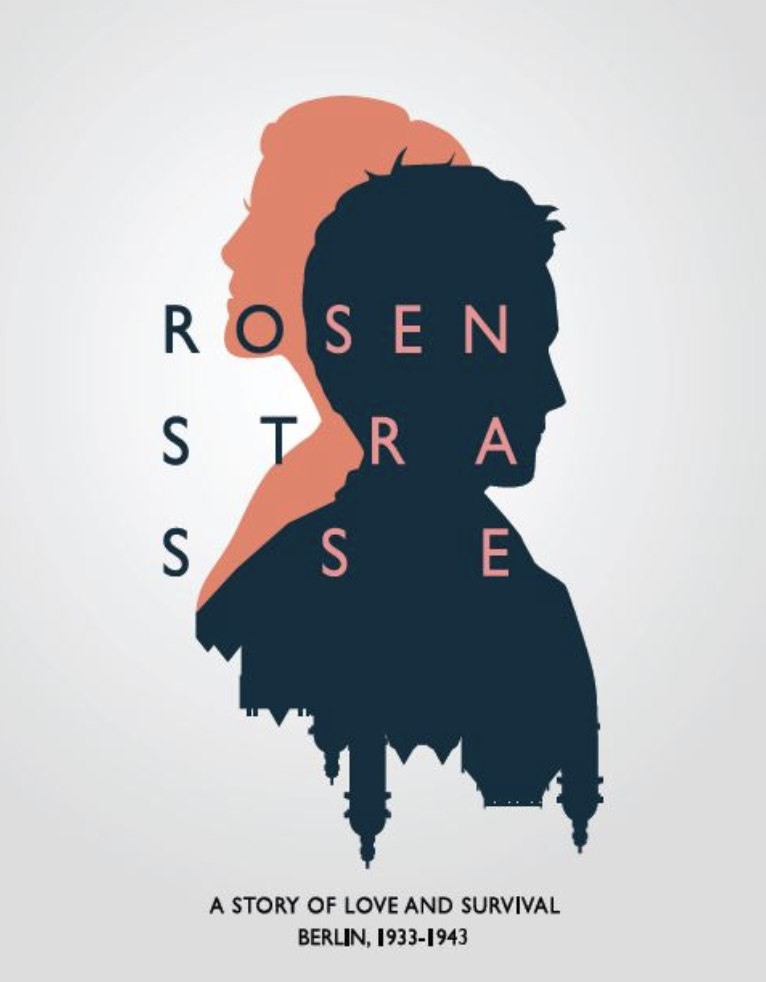

Rosenstrasse App

* Due to the policy, my work and the Github Repo is unavailable to public.
If you wish to know more about the game or my contribution,
please contact the head manager Jessica Hammer
at hammerj@andrew.cmu.edu